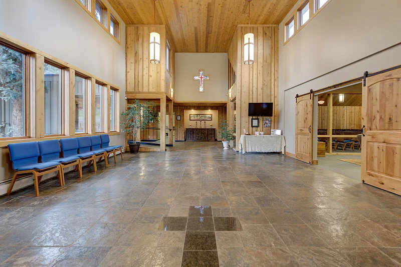

We are dedicated to renewing lives and communities by making vibrant and loving disciples of Jesus.
What We Believe
God is Real
We believe in one God, eternally existing in three persons: Father, Son, and Holy Spirit. We believe in Jesus Christ, God's only Son, who died for our sins and rose bodily from the grave. He is coming again. God is omniscient and omnipresent — present in every moment and every place.
Nobody's Perfect
We believe that Jesus lived a sinless life and was the only person to ever fully meet God's standard. We recognize that the rest of us fall short — and that's exactly why Christ's sacrifice on our behalf is such extraordinary good news.
God Loves Each Person
We believe every person is made in God's image and is deeply loved by Him. "For God so loved the world that he gave his one and only Son, that whoever believes in him shall not perish but have eternal life." (John 3:16). Salvation is found only through Christ.
Faith is a Practice
We believe salvation comes through belief in Jesus Christ, and that ongoing transformation happens through a living relationship with God. Rooted in Lutheran tradition, we center our worship on Scripture and the Lord's Supper, holding to the confessions of the Reformation as faithful expressions of biblical teaching. For further reading, see biblegateway.com and bookofconcord.org.

Our Story
Church of the Cross was founded in 1959 as "Lutheran Church of the Cross" — a small congregation rooted in the mountain community of Evergreen, Colorado. For decades it served the area as a traditional Lutheran parish, affiliated with a major denominational body.
As the congregation grew and its vision expanded, members chose to affiliate with LCMC (Lutheran Congregations in Mission for Christ), a network of congregations committed to mission and freedom in Christ while remaining anchored in Lutheran confession and practice.
In 2019, the congregation voted to rename the church "Church of the Cross" — a name that places the cross of Christ at the center of its identity and signals an open welcome to all people of the Evergreen community and beyond.
Today, Church of the Cross continues to be a gathering place for faith, fellowship, and service — a multigenerational family united by love for God and neighbor.
Come as you are.
We'd love to meet you. Join us any Sunday morning at 9:30 a.m. for worship, or reach out with any questions.
Plan A Visit